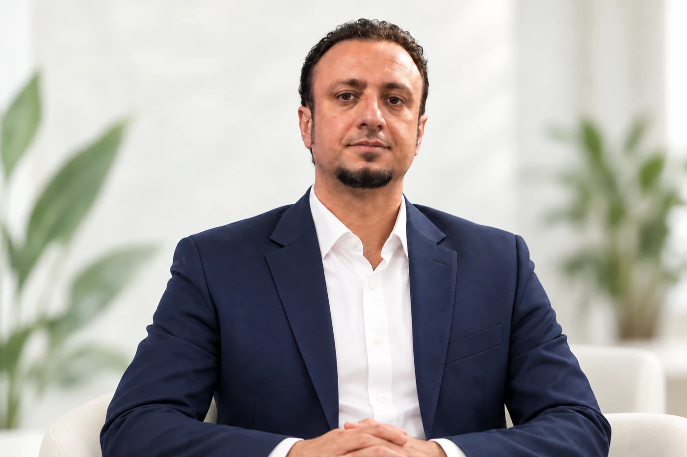
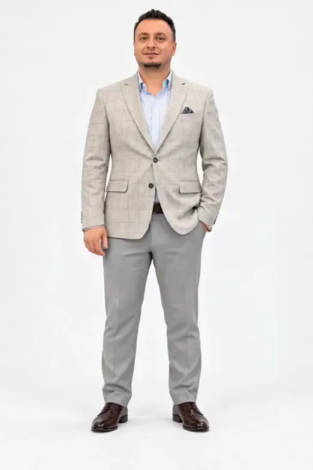
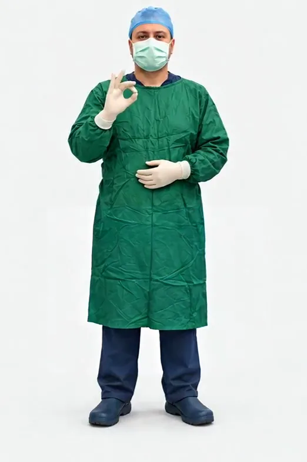

مسیر علمی
پشت هر تصمیم، دانش و تجربه
سابقهٔ تدریس دانشگاهی، آموزش تخصصی و مسئولیتهای علمی در کنگرههای دندانپزشکی.
مشاهدهٔ سوابق
✳ مراقبت، با نگاهی دقیقتر
دکتر پویان سیگاری
متخصص جراحی دهان، فک و صورت
از نخستین گفتوگو تا پیگیری درمان،
در مسیر سلامت شما همراه هستیم.
۰۱ / آشنایی با پزشک
KNOWLEDGE MEETS CARE
دکتر سیگاری / مسیر علمی
مسیر پزشکی با یادگیری آغاز میشود؛
و با آموزش، پژوهش و تبادل تجربه ادامه مییابد.
سابقهٔ دانشگاهیمعرفی بهعنوان استادیار بخش جراحی دهان، فک و صورت دانشگاه علوم پزشکی اردبیل در منابع ۲۰۱۶ و ۱۳۹۶.
فعالیت علمی و آموزشیتدریس دورههای تخصصی و حضور در مسئولیتهای علمی کنگرههای دندانپزشکی.
وقتی به تصویر رسیدید، با یک اسکرول چرخش کامل آغاز میشود.
مسیر علمی
سابقهٔ تدریس دانشگاهی، آموزش تخصصی و مسئولیتهای علمی در کنگرههای دندانپزشکی.
مشاهدهٔ سوابق
فعالیت جراحی
بررسی شرایط هر بیمار و برنامهریزی درمان در حوزهٔ جراحی دهان، فک و صورت.
حوزههای درمان۰۳ / حوزههای درمان
انتخاب مسیر درمان،
پس از مشاوره و ارزیابی شرایط شما.
روش و امکان انجام هر درمان، پس از معاینه و بررسی تخصصی مشخص میشود.
در هر قدم، همراه شما
چهار گام برای آغاز و ادامهٔ مسیر درمان
تماس با مطب و هماهنگی
زمان مناسب مراجعه
بررسی شرایط شما
و گفتوگو دربارهٔ درمان
تعیین رویکرد درمانی
متناسب با نیاز شما
هماهنگی مراجعات بعدی
در ادامهٔ مسیر درمان
۰۴ / مقالات و پژوهشها
گزیدهای از پژوهشهای منتشرشده
با نام Pouyan Sigari
۰۵ / پیش از مراجعه
برای جزئیات بیشتر،
با مطب در تماس باشید.
آغاز یک گفتوگو
برای هماهنگی نوبت مشاوره و اطلاع از زمان پذیرش،
با مطب تماس بگیرید.